User guide
Last updated: September 15, 2026
Add books
In My, open 'Add book files' and tap 'Add a file'. EPUB, PDF, and TXT formats are detected automatically.
Choose several books with 'Add books from a folder'. Added files are copied into the app.
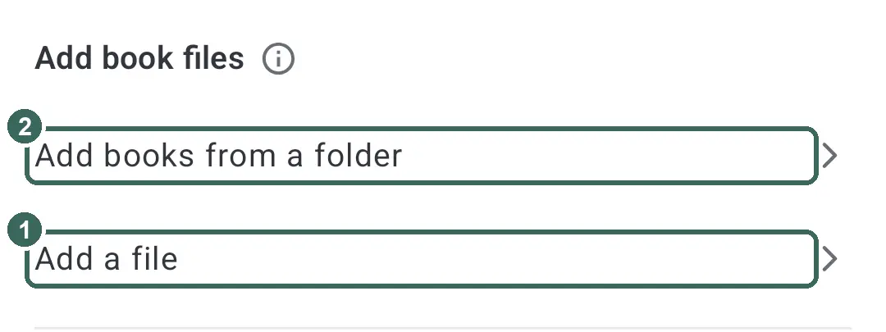
To attach more files to a work, tap '+ Add file' in the 'File' row on the work info screen.
Tap the cover and choose 'Choose from file covers' or 'Choose from gallery'.
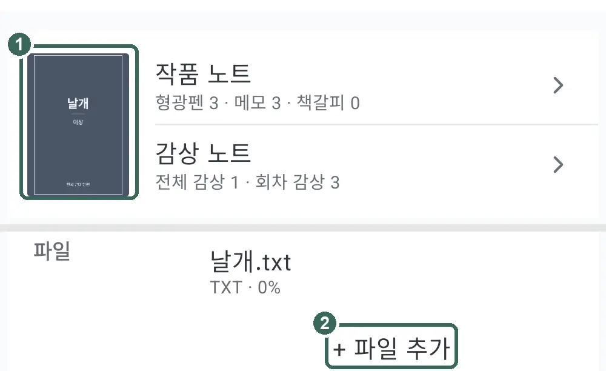
Reading and appearance
Open a book and tap the center to open the menu. Tap again to close it.
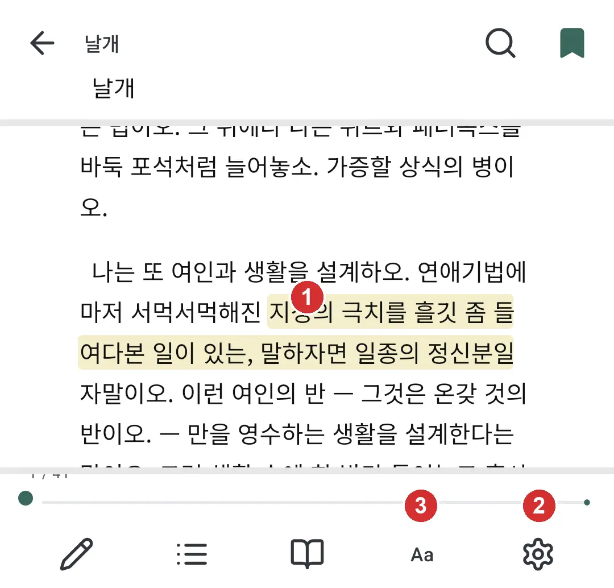
Choose 'Page-turn tap zones' in 'Viewer settings'. The default, 'Left and right', uses left for the previous page and right for the next; 'Top and bottom' uses top for previous and bottom for next.
For EPUB and TXT, adjust the font, text size, spacing, and background in 'Appearance'. Text size stays fixed in original PDFs.
With 'Scroll view', swipe to read. Tapping the edges does not turn pages.
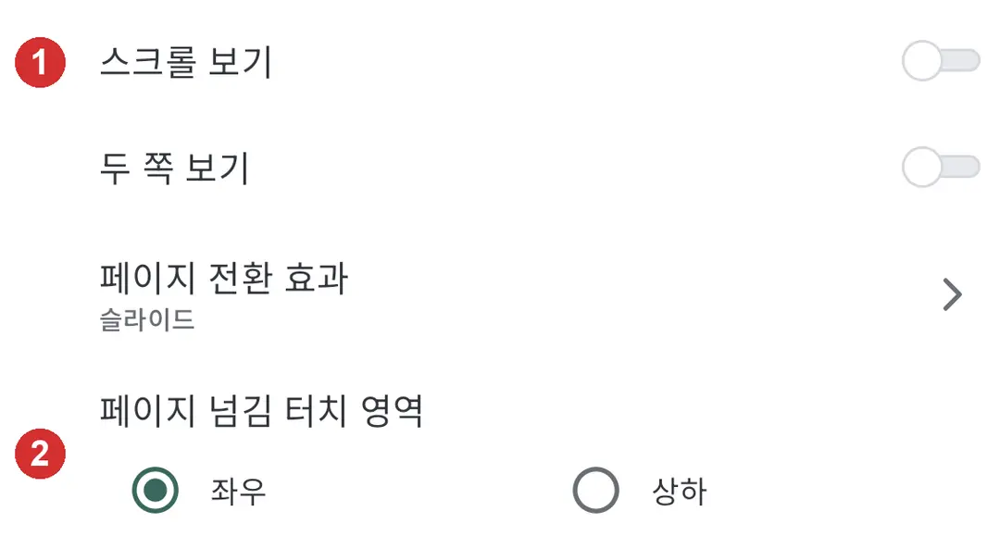
Highlights, memos, and bookmarks
In EPUB and TXT, hold a sentence, adjust the selection, and tap a color button. Tap a saved highlight to change its color.
Select a passage, tap 'Memo', write your note, and tap 'Save'.
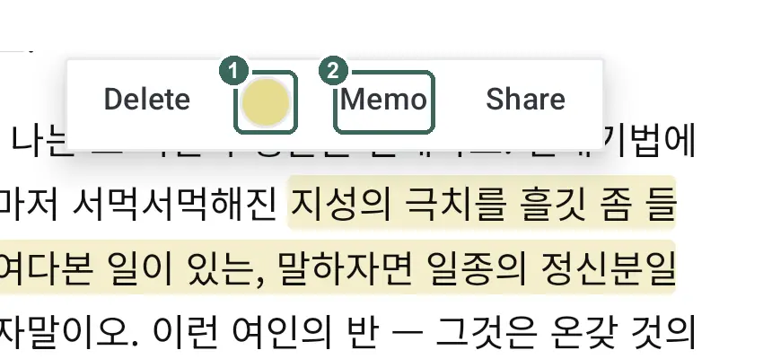
Tap the bookmark button in the menu to save your position or remove it. Review saved records in 'Reading notes'.
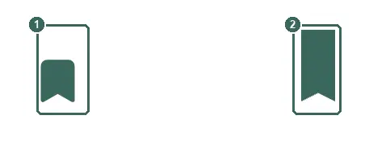
Use 'Convert to EPUB' before highlighting an original PDF. Image scans without text cannot be converted.
Listen
Tap 'Listen' in the bar at the bottom of the reading screen to have the current page read aloud. If your device has no Korean voice, an install prompt appears first.
The playback bar moves between sentences and controls speed, 'Listening timer' and 'Touch lock'. Tap a sentence in the text to read from there; the gear button opens 'Listening settings'.
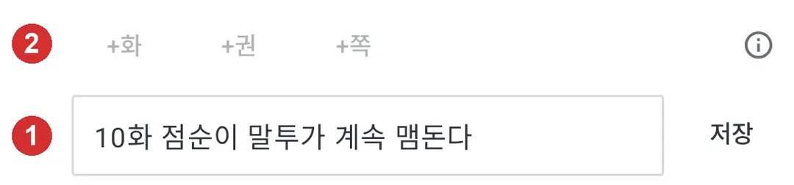
In 'Listening settings', choose separate voices for narration, dialogue and inner thoughts and try them with 'Preview'. Set how long to pause after an ellipsis, a scene break and a dash.
'Reading rules' switch on or off reading corner quotes 「 」 as dialogue, reading text inside square brackets [ ], simplifying messenger conversations, and shortening repeated laughter. Words added to 'Words to skip in this work' are skipped in that work.
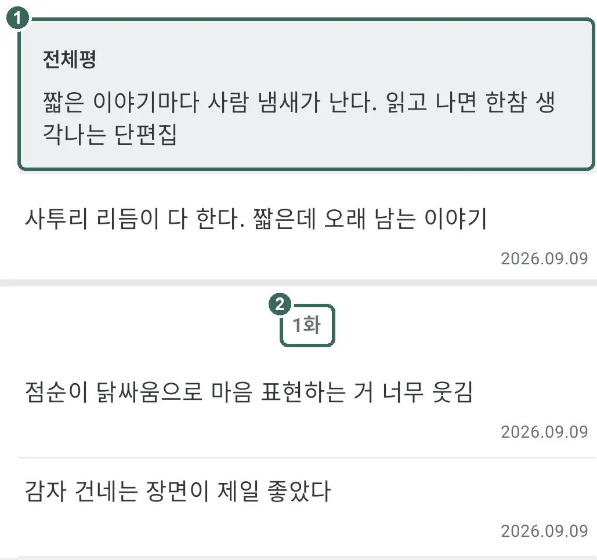
Turn on 'Follow narration' to turn pages along with the reading; turn it off to browse other pages freely while listening. Reading continues when you leave the app or the screen turns off, and stops when you leave the reading screen. Tap 'Listen' again later to pick up where you left off with 'Continue listening'.
Write notes
Start a note with 10화, 20권, or p. 30 for episode 10, volume 20, or page 30, followed by a space or line break. You can also use !10, @20, or p30.
For several episodes, use 10-12화 or !10-12. Add a space or line break, then write your note.

Without a marker, the text becomes an overall note. Use 'Overall review' at the top for a single verdict on the work.

Organize your library and shelves
In Library, open 'Shelf list' and tap '+ Add new shelf'. Hold a work and choose 'Add to shelf'.
Change the status in 'Edit book info' and works with book files are sorted into status shelves (for several works, select them and use 'Change reading status'). 'Reading' includes serializing works and rereads; 'Completed' includes completed serials.
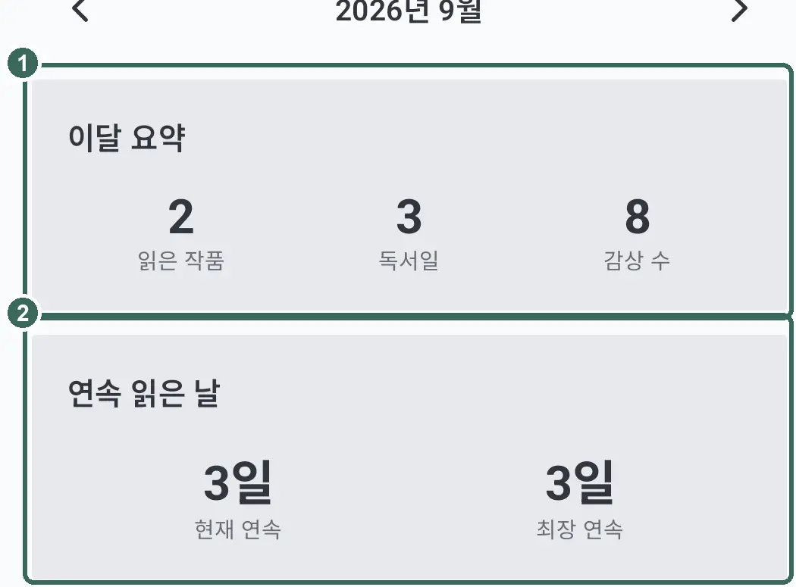
'Not started', 'Dropped', and 'Records only' are hidden at first. Choose which shelves to show with 'Edit' in 'Shelf list'.
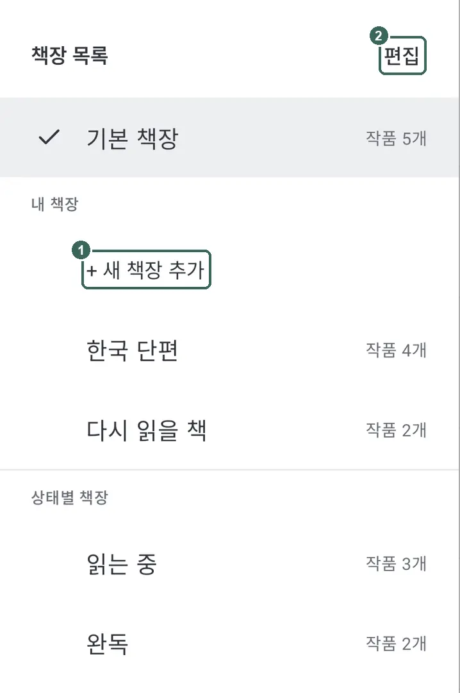
'Records only' holds works without book files. 'Remove from shelf' keeps the work and its records.
Calendar and statistics
Reading in the viewer or saving a note records a reading day. Tap a date in 'Calendar' and use 'Add book' to fill in missing records.

See a year’s reading days in 'Year'. See your current and longest streaks in 'Reading streak'.
In 'Monthly summary' under 'Stats', 'Books read' and 'Notes' are based on saved notes. 'Reading days' counts the days you read.
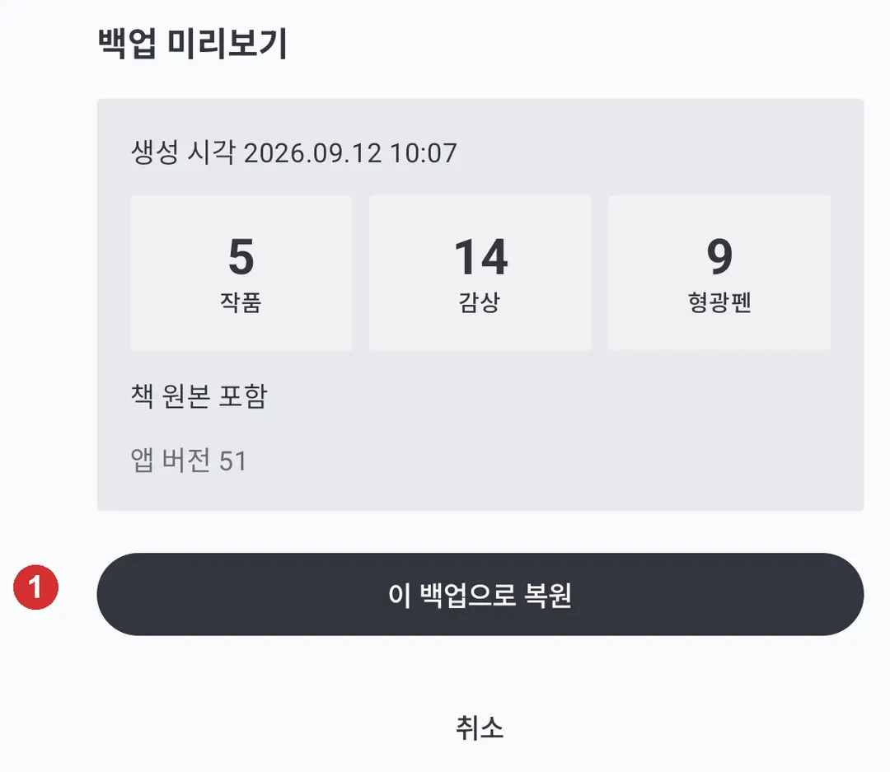
Backup
In My, open 'Backup' and use 'Create backup file' to save records and settings. Backups use a password of at least eight characters by default; if forgotten, the backup cannot be recovered.
'Include original book files' is on at first. Turn it off and you will need to add the book files again after restoring.
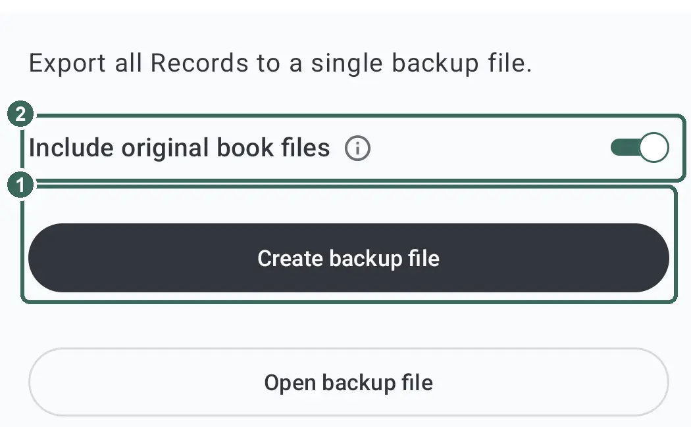
Choose and review a file with 'Open backup file', then tap 'Restore this backup'. The backup replaces your current records and settings.

On e-ink devices
For electronic ink displays, turn on 'App-wide high contrast (E Ink)' in My. It increases text and line contrast in the light theme only.
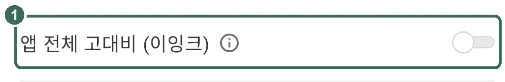
Separately enable 'E Ink mode' in 'Viewer settings' on the reading screen. It uses a white background and black text and reduces animations and page-turn effects.
For lingering images, enable 'Periodic full refresh' and set 'Full refresh interval'. The whole screen redraws after the chosen number of pages.
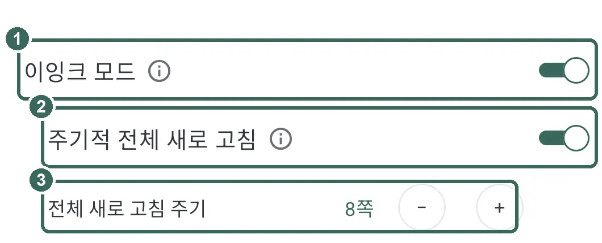
Contact: asle14910@gmail.com